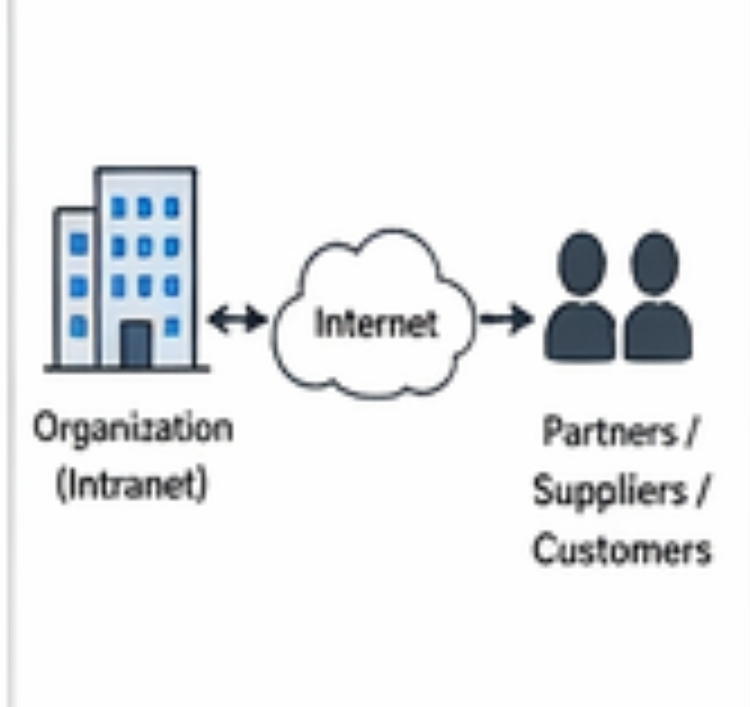

Extranet
An Extranet is a private network that extends an organization's intranet to authorized users outside the organization, typically partners or customers. Examples: Supplier portals, customer service websites Functions: Facilitates secure communication and collaboration with external parties Provides controlled access to specific resources and information

Example: A company may have an extranet that allows its suppliers to access inventory information and place orders.